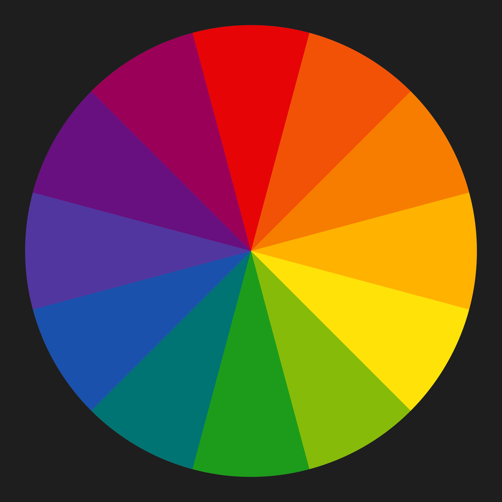

Understanding Color In Photography
The definition of color is a component of light that is separated when it is reflected off of an object. Color begins with light. The color we see is influenced by the characteristics of the source and what it reflects off. Wavelengths of reflected light determine what color we see.
Color is said to be three-dimensional because of its three unique aspects. When you seek to define a specific color, there are three properties to consider; Hue, Value, and Saturation.
- Hue is a name we give colors on the color wheel (red, yellow, green, orange, and so on). It’s the technical definition of color perception.
- Value is the light and dark property of a color, the luminance of additive color, and the tint or the shade of subtractive color.
- Saturation (also known as purity) is the level of grayness present. The less saturated, the more gray a color appears.
There are two main aspects of color in photography to understand. One is ‘additive color’ and the other is ‘subtractive color’. Additive color theory is about things that emit light. Subtractive color theory is about light reflecting off things.
When we look at a screen or monitor of any kind, we see additive color. The primary additive colors are red, green, and blue. RGB. Looking at anything that does not project light, we see reflected color known as subtractive color. This is with almost anything other than monitors and lights. The primary subtractive colors are red, yellow, and blue. RYB.
There are two important ways of understanding color in photography. More specifically, in digital photography. The colors we see and photograph. These are usually subtractive colors. The colors of the photos we take as we view them on our monitors. This is additive color.
Color Theory in Photography
- Camera Versus the Human Eye
- Understanding Light and Color
- Red, Green, and Blue vs. Red, Yellow, and Blue
- Color Photography and Composition
The sensor in a digital camera records light as it actually is. It then saves it unaltered as a RAW file or manipulates it when saving jpg files. Your eye/brain, however, will always correct light back to “normal” and our brain is constantly compensating to what it sees.
The white balance on your camera filters the light, so white will be seen as white. When there’s a correct balance, the camera will record colors as you see them. If the white balance on a digital camera is not set for the lighting conditions, white and any color will not look right. This is because a filter is applied to balance the light when it contains a warmer or cooler tone.
The color of the subject is determined by the color of the light source and the color of the subject. Your brain is constantly compensating. That is … if you are inside a place lit with tungsten bulbs, those bulbs transmit a reddish-orange light. White objects will be recorded as reddish-orange. But your brain will correct that light, and you will see a white object.
The same thing happens inside a place illuminated with fluorescent light. Fluorescent lights usually transmit an ugly blue-green light, and some types transmit a warmer tone. But your brain corrects that light, and it appears white to your eye. Your camera records the color the light casts and may correct it with the white balance.
So, when you are taking photographs of an interior scene with the lights on, you need to make sure all the light sources are the same color temperature. If there’s any daylight affecting the exposure, you must ensure all the lights are daylight balanced.
Red light rays only contain red because it is a primary color. Green rays only contain green. Blue rays only contain blue. That is because these are primary additive colors. Magenta, cyan, and yellow are the secondary additive colors because each one is a mix of two primary colors. Mixing primary and secondary colors will give you tertiary (third tier) colors. Together these make up all the visible colors in the spectrum.
The red pigment absorbs every colored light except for red light rays. The blue pigment absorbs all by blue light rays. Yellow absorbs all the yellow rays. So these are how we see subtractive colors because other colored rays are subtracted from what we can see. These are the three primary subtractive colors we see when light reflects off things.
Mixing any two of these primaries makes a set of tertiary colors. These are orange, violet, and green. These are the colors of a traditional color wheel. From this basic set of colors, all other colors can be mixed.
Color in photography composition is one of the main tools a photographer can use to create mood in their images. How you combine various colors or exclude them from your photographs influences how people might feel when they look at them. This is why understanding color in photography is so important.
How you frame a scene to include the right combination of colors can affect every aspect, from the photograph’s focal point to how viewers feel about it. Placing red and green objects next to each other will produce a different feeling than placing blue and green elements next to each other. You need to train your photographic eye in using color as best you can. Because we naturally see color all around us, we can take it for granted. To use color well in your images, be aware of it. Look at the colors present in your frame as you are composing photographs. Would your image look better if you removed or avoided including something of a particular color? Would adding some color spice up your photo and make it more interesting?
Tips for Using Colors Well in Your Photographs

- Think About the Color Wheel
- Use One Dominant Color
- Post Processing Color
How do the colors in your images relate to each other? Make use of complementary colors. These are opposite on the color wheel. Red and green. Blue and orange. Yellow and purple. Think about primary colors and secondary colors. Use color to enhance your image. Do you want colors of strong contrast? These are the complementary colors. Or would more harmonious colors suit the mood of your subject better? These are called analogous colors and are located next to each other on the color wheel.
A popular technique amongst some photographers is to use one hue that is dominant in a photo. This use of color might be a photo of a red car in a green and brown forest scene. They will dominate against the softer colors of nature.
Digital photography allows for infinite options when you post-process color. Many photographers prefer a natural look. Others will post-process color in images to alter them completely. How you chose to manipulate color is another aspect of the art of photography.